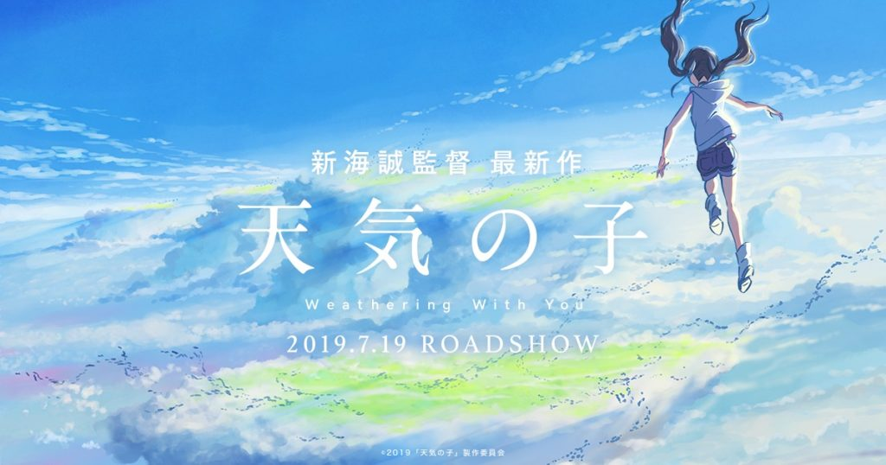
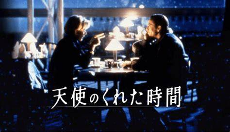

天気の子
花火大会のシーン
- 陽菜が花火大会を晴れにするために祈る姿が印象的です。
- ドローン撮影のように美しく表現されています。
美しい夕景
- 都市のビル群に包まれる夕景が美しく描かれています。
感情の揺さぶり
- 主人公たちの選択や感情の変化が観客に深い感動を与えます。
天候と心情の結びつき
- 天気とキャラクターの心情が密接に結びついており、物語に引き込まれます。

天使のくれた時間
演出の巧みさ
- ビジネスの冷たい世界と温かな家庭生活のコントラストを、細部にわたる演出で鮮明に表現。
感情豊かな脚本
- 「もしも」のシナリオはありがちに思えるかもしれませんが、観客に「本当に大切なものは何か」を問いかける深さがあります。
感情の揺さぶり
- 主人公たちの選択や感情の変化が観客に深い感動を与えます。
選択と幸福
- 観客に「自分にとって何が一番大切か？」を問いかける普遍的なメッセージが込められています。
トランスワールド
サスペンスミステリー
- 3人の男女が森の中で出会う中で、彼らの運命が徐々に明らかになる様子が描かれています。
深い謎
- それぞれの時代や認識している場所が異なることに気づくことで、物語が深まります。
ホラー要素なし
- 映画はホラーではなく、サスペンスとして楽しむことができます。